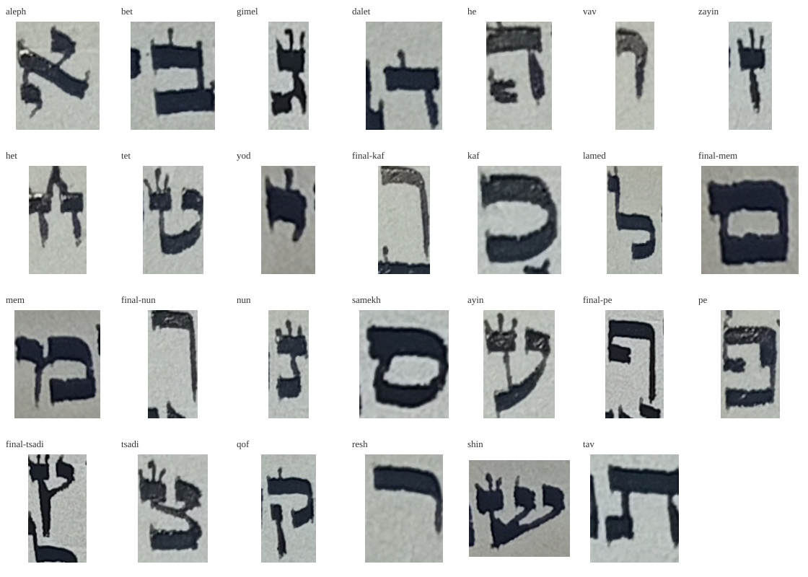

Ksav / Alphabet
Draft 03 · 27 formsLetterforms
אAleph
בBet
גGimel
דDalet
הHe
וVav
זZayin
חHet
טTet
יYod
כKaf
ךFinal Kaf
לLamed
מMem
םFinal Mem
נNun
ןFinal Nun
סSamekh
עAyin
פPe
ףFinal Pe
צTsadi
ץFinal Tsadi
קQof
רResh
שShin
תTav
Word Studies
ספרים על המדף
מכתב קטן ליד החלון
גשם ורוח בחוץ
טקסט ברור ונעים
צליל זך
אותיות מרובעות
Reading Studies
30 pxספרים על המדף מכתב קטן ליד החלון גשם ורוח בחוץ טקסט ברור ונעים צליל זך אותיות מרובעות
ספרים על המדף מכתב קטן ליד החלון גשם ורוח בחוץ טקסט ברור ונעים צליל זך אותיות מרובעות
Source Samples
